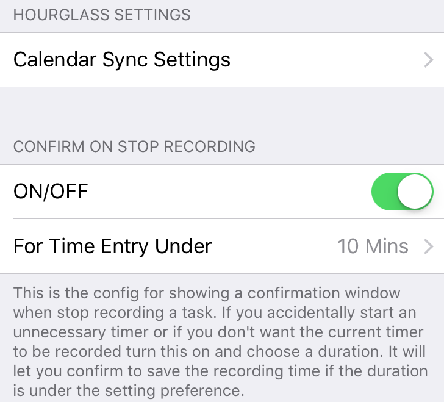

iOS Settings Bundle
This blog talks about the basic of iOS Settings Bundle. If your app only needs to include basic setting options, you can use the iOS Settings Bundle to include all the setting options into the native iOS settings app. It has been used heavily in my Hourglass app for all the setting options, and it works pretty well.
Create Settings Bundle
Go to Menu File -> New -> File…, choose the Settings Bundle in the popup and choose a save location. After that you can see a folder called Settings Bundle available in your project. There is a file named Root.plist and that is the root file for your app’s setting page.
In the Root.plist, under Preference Items you can see all the widget you have in your setting page. It will pre-generate some and you can always delete them and create your own.
Below will introduce some of the preference item and how you set them it. It will not cover all the types since some are easy to figure out on your own.
Group
Group usually separates settings and give user a clear idea on what that setting option is for. It is a good idea to always have group to wrap around settings. You must have a title on the top and can optionally create some text to display on footer.

To display footer, you need to have a field with key FooterText. It is documented here.
Child Pane
The Root.plist is your root file for your settings page and you can have many child panes to navigate inside your settings.
First, create a new plist file. First, select the root folder and choose new file from the menu, select property list and create. After creating the new property file, drag it into the settings bundle in the navigation panel and the file will be copied into the settings bundle. Remove the one that you created in the root project folder, and move it into trash.
Back to Root.plist, create a new preference item. Expand the new item you created and in the value for key Type, select Child Panel. Note that if you drop down in the Item x area, you may not see child pane option available.
The value you need to edit are Type, Title, Filename. Title is obviously the title displayed on the table cell, and the file name is the file name for that newly created plist file.
Select the plist file you just created, right click on white empty area, select property list type and choose the last one iPhone Settings plist.
Create key Strings Filename and set value as Root. Note: this is not the file name of the file, please set it as the parent file name and all file names above doesn’t contains extension when put into the values field as well.

Sync Settings Back
Now you have settings in iOS default settings app, and users can manipulate values there, but you need to reflect them into the app when user changes them. Here is how you do it.
First, it is always recommend to create a new class for manage the settings. Here I will call it HGSettings.swift.
I prefer to make that class singleton for easy access anywhere else.
The first thing to do in that class is to set the default value for shared preference. Yes, you did set defaults when you create the settings bundle, but the default value there is only for the appearance of all the widget and it do not register the defaults in User Defaults
1 | UserDefaults.standard.register(defaults: [ |
Don't forget that you should register all the keys you used in your settings bundle, otherwise when user don't touch the setting, you will get a nil from that key.
After register the default, you will need to write all the properties. Here is what I prefer to do. Create each property corresponding to each key. Don't forget to set the property type correctly.
Then write both getter and setter for the property.
1 | var navOptionsEscalators: Bool { |
Example
Here is an example I use when I am writing the navigation app for mapsted, I use the string enum to store all the keys.
1 | // |
FAQ
If you have any additional questions when using Settings Bundle, you may find the answers here
nothing shows in settings
Try to close the settings app and reopen it. It only happens when you compile the app and will be find when user is downloading them from the test flight or app store.
How do I Reorder the Preference Items?
To reorder, try to drag at the end on the right side. It is a little bit hard sometimes for it to recognize the dragging action. When you start dragging it, move the mouse to the left, it is the only place to insert into the row.